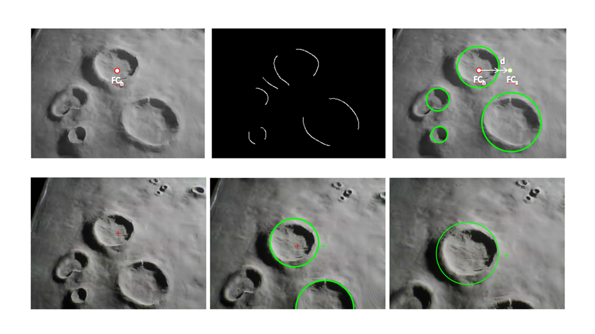
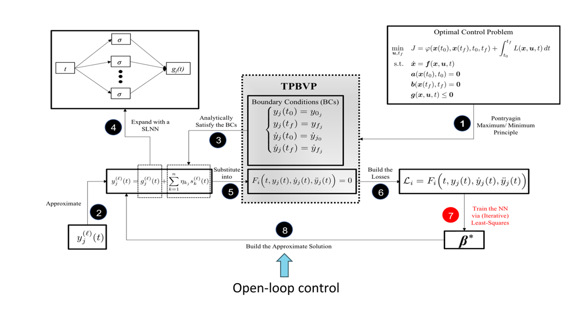
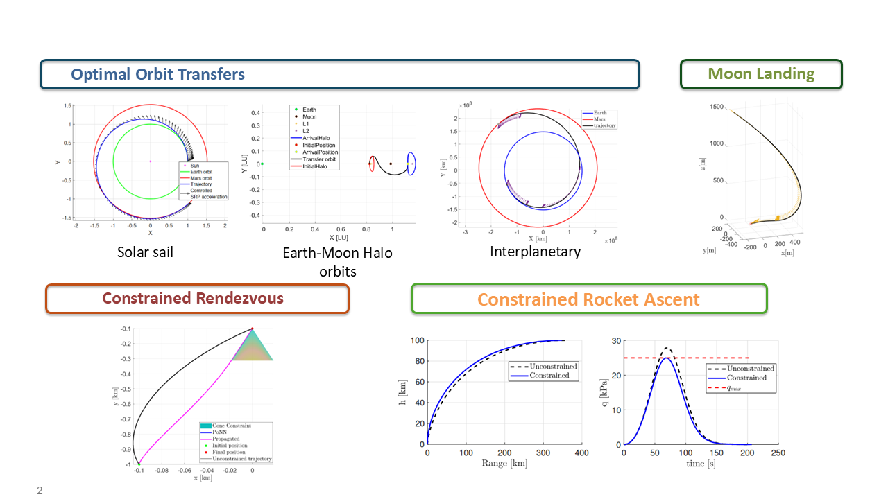
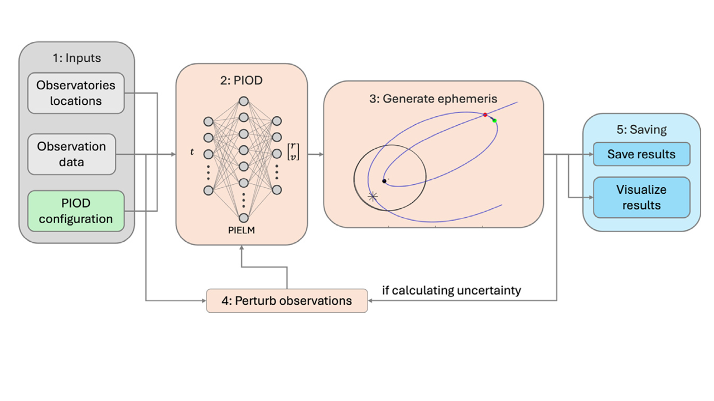
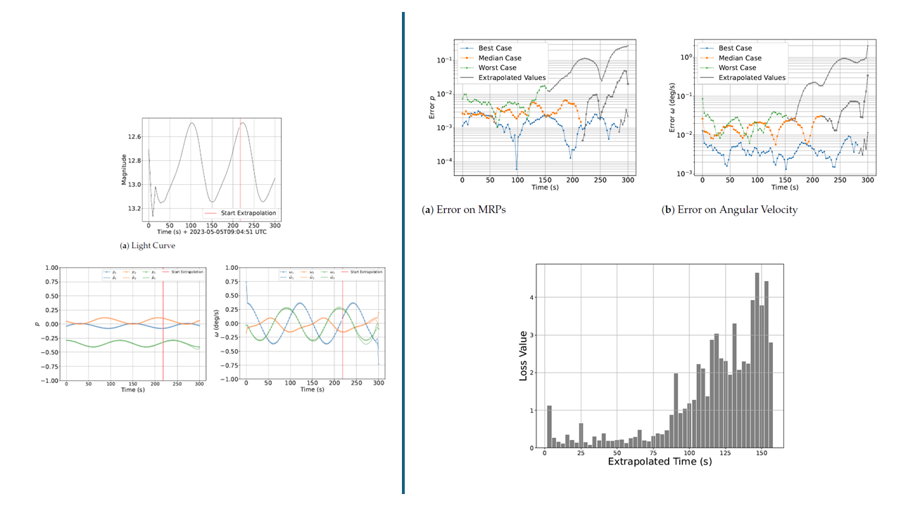
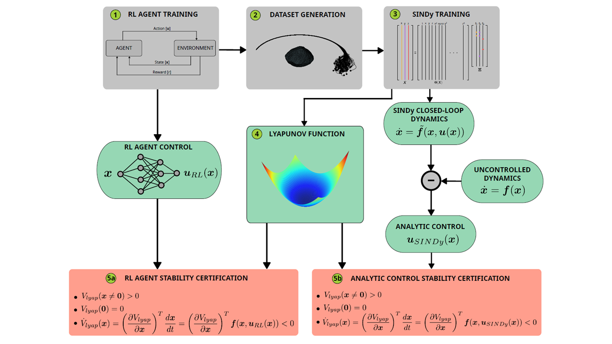
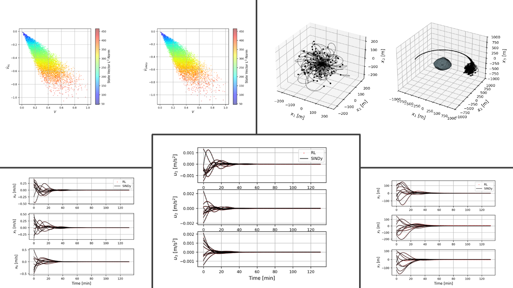
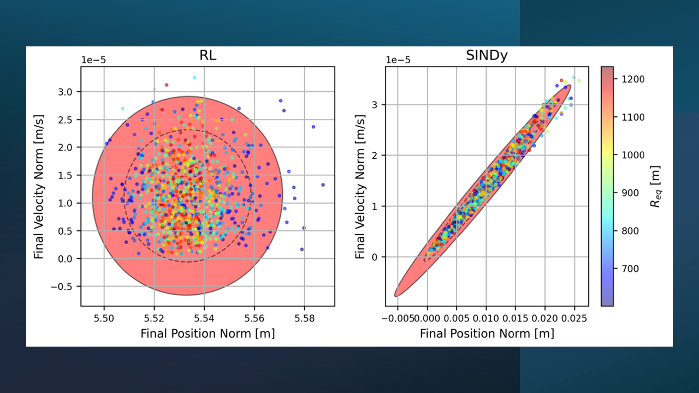
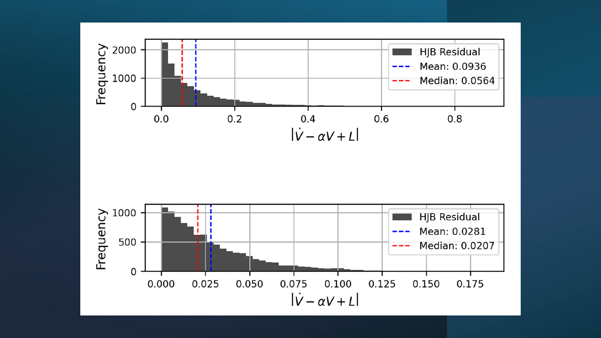
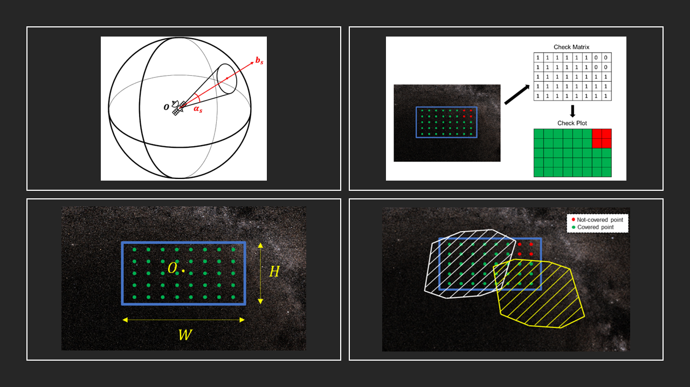

Guidance, navigation, and control
Optimal and autonomous decision-making for landing, proximity operations, transfers, and other constrained aerospace missions.
Explore GNC research →Guidance & control · Space safety · Scientific machine learning · Astrodynamics
The CIRO research group develops theory, algorithms, and computational tools for optimal guidance and control, space situational awareness, and scientific machine learning for aerospace applications, with astrodynamics providing the physical foundation.
Department of Mechanical & Aerospace Engineering
University of South Florida · Tampa
Our mission
CIRO advances autonomous aerospace systems that can make safety-critical decisions under uncertainty—and whose behavior can be understood, trusted, and certified.
We combine optimal guidance and control, astrodynamics, and scientific machine learning to develop trustworthy learning-enabled controllers, rigorous decision-making tools, and space-environment models. Our goal is to enable safe autonomous operations while helping preserve the long-term sustainability of the space environment.
Meet the laboratory ↗Research areas
Physics-based models, optimization, estimation, and learning come together to improve aerospace autonomy, safety, and sustainability.



Optimal and autonomous decision-making for landing, proximity operations, transfers, and other constrained aerospace missions.
Explore GNC research →





Orbit determination, object characterization, surveillance, and orbital-capacity analysis for a safer, more sustainable space environment.
Explore SSA research →




Physics-informed learning, interpretable dynamics, and stability certification for safety-critical aerospace applications.
Explore SciML research →





Orbital mechanics, dynamical systems, mission design, and environmental evolution from Earth orbit to cislunar and small-body regimes.
Explore astrodynamics →Selected research
A preview of CIRO’s work in optimal guidance and control, certified ML controllers, orbit determination, and orbital capacity.
 01
01Optimal guidance and control
Physics-based optimization and learning methods produce fast, reliable guidance and control solutions for landing, orbital transfers, inspection, and proximity operations.
 02
02Trustworthy autonomy
Interpretable models, Lyapunov analysis, and stability certificates turn learning-enabled control policies into safer and more trustworthy aerospace autonomy.
 03
03Space situational awareness
Physics-informed methods reconstruct and track trajectories from sparse observations without requiring an initial orbital estimate, supporting GEO, X-GEO, and cislunar awareness.
04Orbital sustainability
Source–sink population models quantify collision risk, debris growth, and the carrying capacity of orbital regions to support evidence-based decisions for long-term space sustainability.
Featured publications
Including physics-informed orbit determination for X-GEO space situational awareness.
Browse all publications →Conti, M.; D’Ambrosio, A.; Circi, C.; Furfaro, R.
Journal of Guidance, Control, and Dynamics 49(7), 1914–1926
Scorsoglio, A.; D’Ambrosio, A.; Le Corre, L.; Gray, B.; Reddy, V.; Furfaro, R.
Acta Astronautica 238, 271–285
D’Ambrosio, A.; Benedikter, B.; Furfaro, R.
Journal of Guidance, Control, and Dynamics 48(8), 1861–1877 · Editor’s Choice
D’Ambrosio, A.; Linares, R.
Journal of Spacecraft and Rockets 61(6), 1447–1463
Start a conversation
We welcome students, researchers, government agencies, and industry partners.
Connect with CIRO →